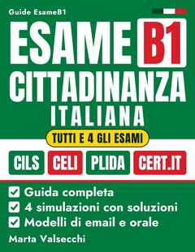

Prova B1 online gratis per la cittadinanza, con correzione automatica
Una prova completa di lettura, grammatica e scrittura, scritta da noi di EsameB1 sul modello dell'esame CILS B1 Cittadinanza. Rispondi alle 24 domande, premi «Correggi la prova» e vedi subito il punteggio, con una spiegazione per ogni risposta. Non serve registrarsi.
Com'è l'esame vero e che cosa trovi qui
L'esame CILS B1 Cittadinanza ha quattro prove. Qui trovi quelle che si possono fare e correggere al computer o sul telefono.
| Prova | All'esame CILS B1 Cittadinanza | In questa prova |
|---|---|---|
| Ascolto | 2 prove su dialoghi, telefonate e altri testi registrati della vita di ogni giorno: una a scelta multipla (6 domande) e una vero/falso (12 frasi). Ogni testo si ascolta due volte. (30 min circa, fino a 12 punti) | No: per questa prova non abbiamo un audio. Al suo posto c'è un dialogo da leggere con 6 domande a scelta multipla (parte 1). Per l'ascolto usa gli audio ufficiali degli enti. |
| Lettura e grammatica | 2 prove su lettere, email, articoli o istruzioni: una vero/falso (12 frasi) e un testo da completare scegliendo la parola giusta (6 spazi). (40 min, fino a 12 punti) | Sì, con lo stesso tipo di prove: 12 frasi vero/falso (parte 2) e un testo da completare con 6 spazi (parte 3). |
| Scrittura | Un'email di 80-120 parole, per esempio per chiedere informazioni o risolvere un problema con un servizio. (40 min, fino a 12 punti) | Sì: due tracce per un'email di 80-120 parole e il contaparole (parte 4). L'email non viene corretta: la controlli tu con i criteri ufficiali. |
| Orale | Una breve presentazione (1 minuto circa) partendo da una lista di domande, poi un dialogo di 2-3 minuti con l'esaminatore. (10 min circa, fino a 12 punti) | Solo la traccia: una presentazione e un dialogo da provare ad alta voce (parte 5). |
All'esame, per le due prove di lettura e grammatica hai 40 minuti e per la scrittura altri 40 minuti. Se vuoi allenarti con il tempo, usa il cronometro della simulazione.
La prova
Scegli una risposta per ogni domanda. Puoi cambiare risposta fino a quando premi «Correggi la prova», in fondo alla parte 3.
Parte 1 · Un dialogo da leggere
Leggi la telefonata. Poi, per ogni domanda, scegli la risposta giusta: a, b o c.
Una telefonata al centro sportivo
Segretaria: Centro sportivo «Le Querce», buongiorno.
Amina: Buongiorno, mi chiamo Amina Haddad. Vorrei iscrivere mio figlio al corso di nuoto. Ha otto anni.
Segretaria: Certo. Suo figlio sa già nuotare?
Amina: Un po'. Ha fatto un corso due anni fa, ma poi abbiamo cambiato città e ha smesso.
Segretaria: Allora va bene il gruppo intermedio. Le lezioni sono il martedì e il giovedì, dalle 17 alle 18.
Amina: Il giovedì per noi è difficile, perché io lavoro fino alle 18. C'è un altro orario?
Segretaria: C'è il corso del sabato mattina, dalle 10 alle 11, ma è una sola lezione alla settimana.
Amina: Il sabato va benissimo. Quanto costa?
Segretaria: Il corso del sabato costa 90 euro per tre mesi. Se paga tutto l'anno insieme c'è uno sconto: 240 euro invece di 270.
Amina: Per ora preferisco pagare solo i primi tre mesi. Che cosa devo portare per l'iscrizione?
Segretaria: Un certificato medico e una fotografia del bambino. Il modulo lo compila qui da noi.
Amina: Il certificato medico non ce l'ho ancora. Posso iscriverlo lo stesso?
Segretaria: Sì, può fare l'iscrizione subito, ma il bambino non può entrare in piscina senza il certificato. Lo porti prima della prima lezione.
Amina: Va bene. Quando comincia il corso?
Segretaria: Sabato 10 ottobre. La segreteria è aperta dal lunedì al venerdì, dalle 9 alle 13 e dalle 15 alle 19.
Amina: Allora passo domani pomeriggio, dopo il lavoro. Grazie mille.
Segretaria: Grazie a lei. A domani.
Parte 2 · Lettura: vero o falso
Leggi l'articolo. Poi, per ogni frase, scegli «Vero» se la frase dice una cosa scritta nel testo, «Falso» se dice una cosa diversa.
La biblioteca del quartiere resta aperta anche la sera
Da lunedì 3 marzo la biblioteca comunale di via dei Tigli ha un nuovo orario. Prima chiudeva alle 18; adesso resta aperta fino alle 22 dal lunedì al giovedì. Il venerdì e il sabato l'orario non cambia: dalle 9 alle 18. La domenica la biblioteca resta chiusa.
La decisione nasce da una richiesta degli abitanti. L'anno scorso più di quattrocento persone hanno firmato una lettera al Comune: molti lavorano tutto il giorno e non riuscivano mai ad andare in biblioteca. «Finisco di lavorare alle 19 e trovavo sempre la porta chiusa», racconta Daniel, 34 anni, che lavora in un magazzino e abita nel quartiere da sei anni. «Adesso posso venire a studiare dopo cena.»
Di sera la biblioteca offre anche nuovi servizi. Il martedì c'è un gruppo di conversazione in italiano per stranieri: è gratuito e non serve iscriversi, basta presentarsi alle 20. Il mercoledì, invece, alcuni volontari aiutano chi deve compilare un modulo o scrivere un curriculum; per questo servizio bisogna prenotare per telefono, perché i posti sono solo dieci.
Per prendere in prestito i libri serve la tessera, che è gratuita: si fa in pochi minuti con un documento d'identità. Si possono prendere fino a cinque libri alla volta e tenerli per trenta giorni. Chi restituisce i libri in ritardo non paga una multa, ma non può prendere altri libri per due settimane.
La direttrice, Paola Ferri, è soddisfatta: «Nelle prime settimane, di sera sono venute in media sessanta persone al giorno. Se i numeri restano questi, da settembre apriremo anche la domenica mattina.»
Parte 3 · Grammatica e lessico: completa l'email
Nell'email mancano 6 parole. Per ogni spazio scegli la parola giusta.
Oggetto: Lavatrice che non funziona
Gentile signor Bassi,
Le scrivo perché da tre giorni la lavatrice dell'appartamento non funziona più. Quando la accendo, l'acqua entra, (19) ______ la macchina non parte. Ho già controllato la spina e il rubinetto, ma non ho (20) ______ nessun problema.
Ieri ho chiamato un tecnico: può venire giovedì mattina, ma prima vuole sapere chi (21) ______ la riparazione. Nel contratto c'è scritto che le riparazioni degli elettrodomestici sono a carico (22) ______ proprietario: per questo Le chiedo di confermarmi che posso fissare l'appuntamento.
Se preferisce mandare un tecnico di Sua fiducia, per me va bene: sono a casa tutti i pomeriggi (23) ______ 17 in poi. Aspetto una Sua (24) ______ e La ringrazio.
Cordiali saluti,
Olena Kovalenko
Pass EsameB1: 6 prove come questa, con correzione automatica e spiegazioni — prezzo indicativo 19 €
Il Pass è in preparazione e non è ancora in vendita. Lasciaci l'email: ti scriviamo se e quando è pronto, con il prezzo definitivo (nessun pagamento ora).
Parte 4 · Scrittura: un'email di 80-120 parole
All'esame: Un'email di 80-120 parole, per esempio per chiedere informazioni o risolvere un problema con un servizio.
Qui: scegli una delle due tracce e scrivi la tua email. Le tracce le abbiamo scritte noi.
- Traccia A. Hai comprato un paio di scarpe su Internet, ma è arrivato un numero sbagliato. Scrivi un'email al servizio clienti del negozio: spiega che cosa è successo, di' se vuoi cambiare le scarpe o riavere i soldi e chiedi come devi rispedire il pacco.
- Traccia B. Vuoi iscriverti a un corso serale di informatica organizzato dal Comune. Scrivi un'email all'ufficio che organizza il corso: presentati, spiega perché il corso ti interessa e chiedi informazioni sugli orari, sul costo e sui documenti da portare.
0 parole
Scrivi o incolla qui la tua email: servono da 80 a 120 parole.
Il contaparole conta solo le parole. Il testo resta nel tuo browser: non lo salviamo e non lo riceviamo.
Controlla la tua email con i criteri ufficiali
Questa parte non viene corretta in automatico. All'esame la scrittura vale 12 punti, divisi così:
- Efficacia comunicativa: fino a 3 punti
- Adeguatezza stilistica: fino a 1 punto
- Correttezza morfosintattica (grammatica): fino a 4 punti
- Adeguatezza e ricchezza lessicale: fino a 3 punti
- Ortografia e punteggiatura: fino a 1 punto
Rileggi il testo e chiediti: ho fatto tutto quello che chiede la traccia? Ho cominciato e finito l'email con un saluto adatto alla persona a cui scrivo? Un'altra persona capisce che cosa voglio?
La prova scritta dei 4 esami: tracce ufficiali, parole e criteri
Parte 5 · Orale: la traccia
All'esame: Una breve presentazione (1 minuto circa) partendo da una lista di domande, poi un dialogo di 2-3 minuti con l'esaminatore.
Qui: non possiamo ascoltarti. Prova ad alta voce, meglio se con un'altra persona. Anche questa traccia l'abbiamo scritta noi.
Presentazione (circa 1 minuto)
Parla di te. Puoi partire da due o tre di queste domande:
- Che lavoro fai, o che cosa studi?
- Com'è una tua giornata normale?
- Che cosa ti piace fare nel tempo libero?
- Com'è il quartiere dove abiti? Che cosa ti piace e che cosa cambieresti?
Dialogo
Devi prenotare una visita medica. Telefoni al centro prenotazioni: spiega di che visita hai bisogno, chiedi il giorno e l'ora e domanda che cosa devi portare. Un'altra persona fa l'impiegato e ti risponde.
La prova orale: le tracce e i file ufficiali, parte per parte
Come contiamo il punteggio
Ogni risposta giusta vale 1 punto; una risposta sbagliata o lasciata vuota vale 0. In tutto sono 24 punti: 6 per il dialogo, 12 per il vero/falso e 6 per il testo da completare. La scrittura e l'orale non entrano nel punteggio.
Non scriviamo «promosso» o «bocciato», perché il nostro punteggio non è quello dell'esame. All'esame CILS B1 Cittadinanza funziona così. Devi avere la sufficienza in ognuna delle abilità dell'esame: ascolto, lettura, scrittura e orale. Ogni abilità ha il suo punteggio. Nel B1 Cittadinanza ogni abilità vale al massimo 12 punti. Il numero minimo di punti per la sufficienza non è scritto nelle pagine ufficiali che abbiamo letto.
Domande frequenti
Questa prova B1 online è ufficiale?
No. L'abbiamo scritta noi di EsameB1 per farti esercitare: i testi e le domande sono nostri e non vengono dagli enti certificatori. Segue il modello dell'esame CILS B1 Cittadinanza, descritto nel sillabo e nei criteri di valutazione dell'Università per Stranieri di Siena. Le prove d'esempio ufficiali, con audio e chiavi, sono nella nostra pagina «Prove d'esempio».
Il punteggio di questa prova vale come quello dell'esame?
No. Qui contiamo le risposte giuste su 24 domande: 1 punto per ogni risposta giusta. All'esame CILS B1 Cittadinanza funziona così. Devi avere la sufficienza in ognuna delle abilità dell'esame: ascolto, lettura, scrittura e orale. Ogni abilità ha il suo punteggio. Nel B1 Cittadinanza ogni abilità vale al massimo 12 punti. Il numero minimo di punti per la sufficienza non è scritto nelle pagine ufficiali che abbiamo letto.
Perché non c'è la prova di ascolto?
Perché per questa prova non abbiamo un audio. Al posto dell'ascolto c'è un dialogo da leggere, con 6 domande a scelta multipla. Per allenare l'ascolto usa gli audio MP3 ufficiali degli enti: li trovi nella nostra pagina sull'ascolto.
La mia email viene corretta?
No. Il contaparole conta solo le parole: per l'email del CILS B1 Cittadinanza ne servono da 80 a 120. Il testo resta nel tuo browser: non lo salviamo e non lo riceviamo. Per controllarlo usa i criteri ufficiali scritti sotto le tracce.
Devo registrarmi o pagare per fare la prova?
No. La prova è gratis e non serve registrarsi. Le risposte vengono corrette nel tuo browser e non vengono salvate: se ricarichi la pagina, la prova ricomincia.
Continua a prepararti

Il libro «Esame B1 Cittadinanza Italiana» è uscito
Guida a tutti e 4 gli esami, 4 simulazioni con soluzioni, modelli di email e orale. Le tracce audio delle prove d'ascolto sono gratis sulla pagina audio del libro.